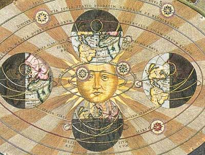

Sacred Texts Sky Lore
Buy this Book at Amazon.com
|

print from Harmonia Macrocosmica, A. Cellarius (detail) [1660] (Public Domain Image) |
From the Closed World to the Infinite Universeby Alexandre Koyré[1957] |
This is a study of the evolution of cosmology from antiquity to mid-20th century. Up to the renaissance the world was thought to be bounded by a distant but finite sphere, the empyrean heaven, beyond which must be the realm of the divine. As science started to discover the true nature of the stars, the planets, and the heavens, natural philosophers came up with new models of the universe. In the process they had to try to explain a number of very obvious everyday phenomena like gravity, force, and mass, and some not so intuitive, such as infinity and relative motion.
That the universe is immense is no longer controversial. The question of whether it is infinite depends on whether space has zero, negative or positive curvature, and that is still being tested. Now scientists are wondering whether there may be an infinity of universes. This is a great book if you are interested in the history of science, astronomy, or the 'big questions' of cosmology or ontology.